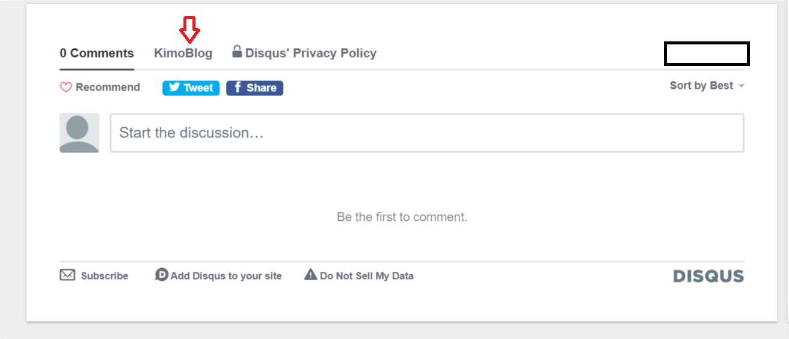
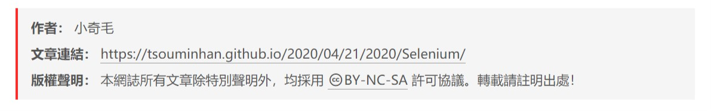

這一篇會寫我自己用在這個網站上的設定以及相關指令，如果你喜歡的話可以繼續看下去。
另外還沒有架站的朋友可以看上一篇文章後再來看這篇。
主題設定
更改主題
NexT主題我覺得很漂亮，很喜歡。
打開terminal：
1 | git clone https://github.com/theme-next/hexo-theme-next themes/next |
接著打開_config.yml，theme改成next就可以了，記得要在重新佈署一次唷!
我記得是因為靜態檔案的關係，佈署之後網頁不會馬上更新，建議使用Ctrl+F5更新頁面，不同瀏覽器似乎有不同的方式，若有問題的話再查一下吧!
1 | theme: next |
修改icon
1 | favicon: |
修改大頭貼
1 | avatar: |
切換主題布景
預設是Muse，可以到這邊查看樣式，另外如果佈署之後發現沒有變化的話輸入hexo d清除之前建立的靜態檔案，然後再重新佈署一次，因為css檔案的問題。
1 | # Schemes |
社群連結
有很多選項，這邊只顯示部分選項。
1 | social: |
友情連結
在links輸入網址。
1 | # Blog rolls |
Menu設定
1 | menu: |
程式碼區塊主題
這邊可以看主題
1 | codeblock: |
按鈕顯示百分比
1 | back2top: |
顯示目錄
1 | toc: |
修改標籤樣式
把#換成
1 | tag_icon: true |
使用留言板
到Disqus點Get Started，接著註冊帳號(我是用google的)，接著點選I want to install Disqus on my site。
要進行些設定，Website Name 就是自定的名稱，會顯示在，會顯示在紅色箭頭處。
另外可以選擇語言，有中文的，但是我看參考來源他的留言板是簡體中文的，所以我選擇英文。

接著把你輸入的Website Name複製到_config.yaml就好了。
1 | # Disqus |
統計瀏覽人數和觀看次數
查了些文章，似乎主要有兩種方法，我選擇用這個方式，只要改_config.yaml就好。
1 | # Show Views / Visitors of the website / page with busuanzi. |
紀錄文章字數以及閱讀時間
執行安裝指令。
1 | npm install hexo-symbols-count-time |
預設字符長度是4閱讀速度是275，應該是用這些參數來做判斷的依據吧，更詳細的內容在github內有說明。
1 | # Post wordcount display settings |
另外，或許也會有人跟我遇到一樣的問題，就是安裝完之後會閱讀時間會顯示NaN：aN。
解決方法可以輸入hexo clean，來源
顯示版權資訊
我只是覺得用這個似乎會有點專業的感覺。
1 | creative_commons: |

Hexo指令
新增文章
在source/_posts新增post_name.md
打開terminal：
1 | hexo new <post_name> |
新增標籤頁面
Terminal輸入指令：
1 | hexo new page "tags" |
把剛剛新生成的檔案進行編輯：
新增type: "tags"
1 | --- |
新增分類頁面
Terminal輸入指令：
1 | hexo new page "categories" |
把剛剛新生成的檔案進行編輯：
新增type: "categories"
1 | --- |
新增關於頁面
Terminal輸入指令：
1 | hexo new page "about" |
把剛剛新生成的檔案進行編輯：
新增type: "about"
1 | --- |
記得檢查有沒有修改_config.yml檔案哦。
程式碼區塊
1 | <!-- 效果就是markdownk的程式區塊語法 --> |
1 | <!-- 效果就是markdownk的程式區塊語法，指定語言 --> |
1 | {% codeblock ./path/filename %} |
內文連結
1 | {% post_link 檔案路徑名稱 要顯示的文字 %} |
在文章中使用圖片
絕對路徑：
可以把圖片放在source/images資料夾中，markdown語法：
1 |  |
相對路徑：
把_config.yml的post_asset_folder設為true之後使用$ hexo new <post_name>新增文章時，會在source/post產生同名的資料夾，直接把圖片放在裡面就好了。
1 | post_asset_folder: true |
markdown語法：
1 |  |
另外我在本地寫.md檔案時圖片不會顯示，但是部屬之後是正常的，還有這種方式只能在文章中顯示，不能在首頁顯示。
結論
有很多地方可以做更改，只需要花時間去查一下如何更改設定就好，不用自己寫程式碼真的很方便。
還有就是如果佈署之後發現怪怪的，hexo clean一下應該都可以解決，似乎是一些靜態檔案的關係。